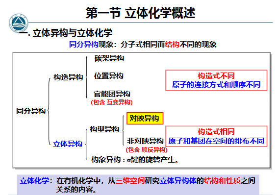
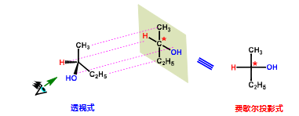
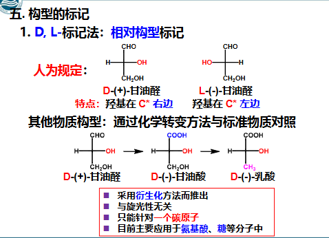
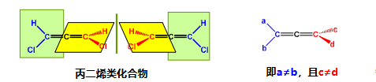
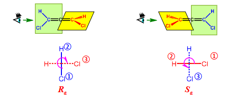
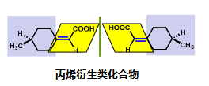
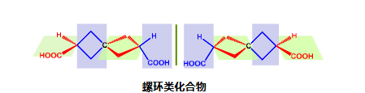
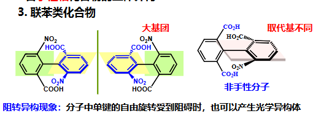

异构

旋光度α
- 比旋光度公式：，c为液体浓度，l为盛液管长度，单位dm
- α是仪器测定的，但是受光源和温度影响，比旋光度要标温度和波长
左旋体/右旋体
- 使得偏振光左旋就叫左旋体，记作l或(-)，levorotatory
- 使得偏振光右旋就叫右旋体，记作d或(+)，dextrorotatory
- 等量左旋体和右旋体混合就叫外消旋体，整体无光学活性，记作dl或(±)
手性
- 一个物体若与自身镜象不能重叠，叫具有手性
- 与其镜像不能重叠，具有手性的分子，而能重叠的分子叫非手性分子
- 手性分子有手性碳，记作，手性碳不连接双键三键，并且连接的四个基团不相同，除此之外还有
- 产生手性的必要和充分条件是分子与其镜像不能重叠，而不是有没有手性原子
对称
- 对成面：假如有一个假想的平面可以把分子分割成为互为实物和镜像关系的两部分，这 个平面就是分子的对称面
- 对称中心：当分子中任意一个原子到某一个假想点（ i ）的连线，再延长到等距离 处，遇到一个相同的原子时，这个假想点就称为对称中心（ i ）
- 旋转对称轴：分子中若存在一条轴线，绕此轴旋转一定角度能使分子复原，就称此轴 为旋转轴
手性造成的性质
- 物理性质和化学性质在非手性条件下相同，旋光度的数值相等，仅旋光方向相反
- 在手性环境条件下，对映体的性质有差异，如：反应速度，生理作用等不同
对称过量百分率(percent enantiomeric excess, e.e.)
- 指在由一对对映异构体组成的混合物中，其中一种异构体比另一种异构体过量的百分率
- （假设R比S多）
Fischer投影式
- 用来表示立体构型
- 十字架交点是手性碳，在纸面上，竖直方向是碳链，编号最小的C在上方，水平方向一个在纸面上，一个在纸面下 eg:

- 一个结构可以画出多个Fischer投影式
- 转换：
- 互换任意两个基团的位置，互换偶数次构型不变
- 固定任意一个基团不动，依次顺时针或逆时针调换另外三个基团的位置，构型保持不变
- 平面旋转180°或其整数倍，构型不变
- 将投影式在纸面上旋转 90°，得到它的对映体
- 离开纸面翻转180° ，得到它的对映体
构型标记
- D/L标记法：人为规定甘油醛的构型，-OH在手性碳左边是L，-OH在手性碳右边是D，其他的化合物用甘油醛转化而来，比如甘油酸，乳酸，此方法常用于生物化学

- R/S标记法：按照次序优先级编号 次序规则，把最小基团离观察者眼睛最远，看另外三个基团的顺序，从大到小是逆时针还是顺时针
- 立体式：顺时针为R，逆时针为S；Fischer投影式：最小基团在竖位，顺 R，逆 S；最小基团在横位，顺 S，逆 R
- 赤式/苏式：相同的原子或基团在同侧：赤藓糖型，简称赤型或赤式（erythro-）；相同的原子或基团在异侧：苏阿糖型，简称苏型或苏式（threo-） 赤式和苏式 立体化学
内消旋体
- 分子中含有多个手性碳，但是互相抵消，导致最终没有旋光性
- 用meso-或m-表示
- 外消旋体可以用方法去除，内消旋体无法
- 所以，存在手性碳原子的分子并非一定是手性分子
环己烷的立体异构
- 环己烷的结构简式的构象拿来判断（比如看对称轴，对称中心，对称面），和分子有无手性一致，所以可以快速判断
手性轴化合物
- 丙二烯类：当两端C原子上各连有两个不相同基团时即具有手性

此时把这个轴看作中心，不同的两个平面看作竖直方向和水平方向，分别比优先级，然后判断，此时，离观察者近的方向为主轴，离观察者远的方向为副轴，副轴的最小基团作为最小基团，然后主轴两个编号1，2，副轴另一个编号3，看顺时针逆时针，顺为，逆为，eg:
- 丙烯衍生（丙烯加平面）：

- 螺环化合物：

- 联苯：

存在阻转异构